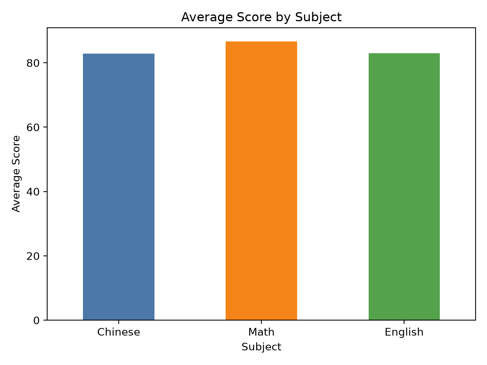
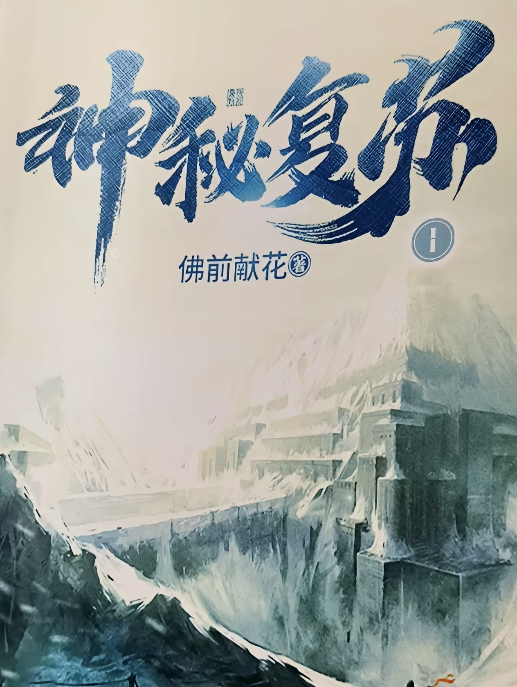

你好，我是
溜溜
今年兰花又开，开了它也会败，我想要一个人活得精彩
事件倒计时
- 事件一
- 事件二
- 事件三
- 事件四
日期
北京时间
你好，我是
今年兰花又开，开了它也会败，我想要一个人活得精彩
日期
北京时间
我是一名中央民族大学海南国际学院的本科生，专业为数据科学与大数据技术，目前大二。
QQ 邮箱：2959601236@qq.com
学过 C/C++，现在主要学习 Python，也按课题组安排学习《动手学深度学习》。
希望通过练习和实践，逐步提高独立编写、修改和调试代码的能力。
目前以跟随教程练习为主，独立编程能力仍在加强。
从示例练习开始，学习理解代码，并尝试自己编写、修改和调试。
已接触线性回归、多层感知机和卷积层基础等内容，代码练习主要跟随教程完成。
正在准备全国大学生数学竞赛和蓝桥杯 Python 大学 A 组，通过练习检查基础和独立解题能力。
蓝桥杯 C/C++ 大学 A 组，海南省三等奖。这是我大一时的竞赛经历。
用 Python 分析 Excel 成绩表，把学生成绩整理成统计结果和图表。这是我的数据分析练习项目。
仓库为私有，查看源码需要访问权限。

我喜欢看的五本小说。

点击书架选项，可查看封面大图。
这五首歌，放进我的歌单。
点击歌名，在网易云音乐搜索。